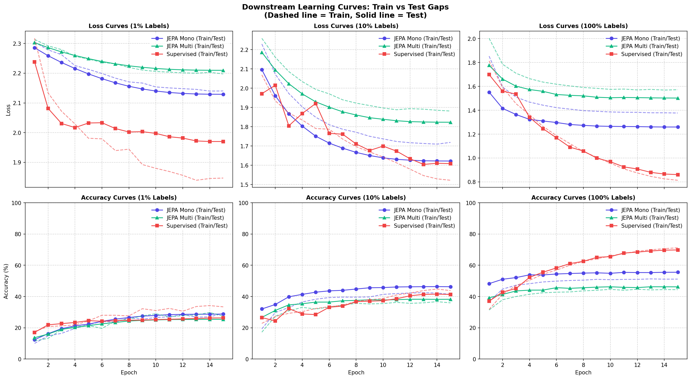
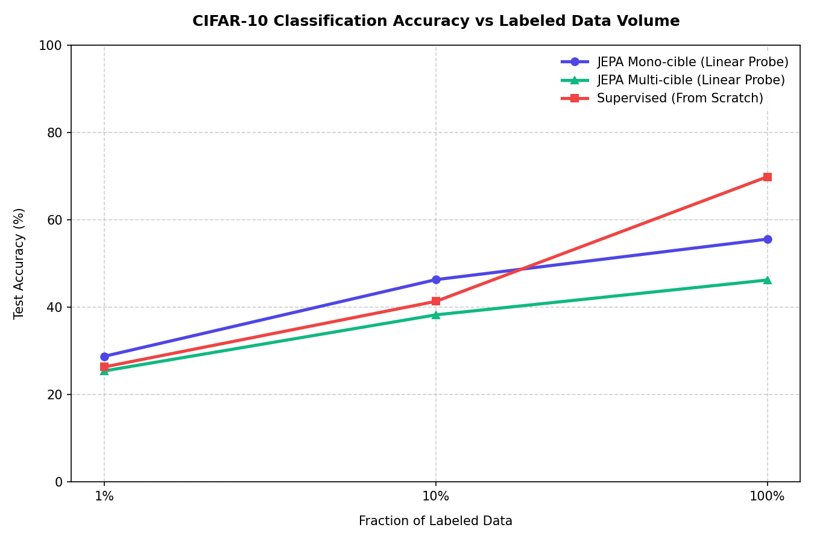

Série I-JEPA — Article 4 : Validation empirique Dans cette première partie de notre quatrième article, nous découvrons la méthode reine pour mesurer la qualité des représentations apprises par une IA sans étiquette : le Linear Probing (sonde linéaire). Nous verrons pourquoi le fait de figer notre réseau est le seul moyen honnête d'évaluer ses connaissances.
🧐 Qu'est-ce qu'une "bonne" représentation ?
Notre JEPA a tourné pendant des heures pour prédire des blocs masqués dans l'espace latent. Son encodeur de contexte sait désormais traduire une image en une suite de 64 vecteurs de dimension 192.
Mais comment savoir si ces vecteurs contiennent des informations utiles ? Comment mesurer s'ils ont "compris" ce qu'est une voiture, un bateau ou un oiseau ?
En apprentissage auto-supervisé, nous utilisons une méthode d'évaluation appelée Linear Probing (sonde linéaire).
L'idée est simple : nous venons brancher une unique couche linéaire (une matrice de projection très simple) au-dessus de notre encodeur pré-entraîné, et nous entraînons uniquement cette couche finale sur CIFAR-10 pour classer les images.
Image d'entrée (32x32) ──► [ ENCODEUR JEPA ] ──► Représentations (192)
│
(Poids Gelés)
│
▼
[ TÊTE LINÉAIRE ] ◄── Entraînée (Apprend à classer)
│
▼
Classe (0-9)
🧊 Pourquoi geler l'encodeur est indispensable ?
C'est la règle d'or du Linear Probing : les poids de l'encodeur doivent être
complètement gelés (requires_grad = False).
Pourquoi cette contrainte ?
- Mesurer la séparabilité linéaire : Si nous permettions à l'encodeur de se modifier, les performances finales refléteraient la capacité du réseau à s'adapter à la tâche de classification, et non pas la qualité intrinsèque des connaissances acquises durant la phase auto-supervisée (JEPA).
- L'analogie du prof : Imaginez un étudiant qui passe un examen de géographie. Le Linear Probing consiste à tester ses connaissances acquises en lui posant des questions directes. Si vous l'autorisez à réviser et à apprendre de nouvelles choses pendant l'examen, vous ne mesurez plus ce qu'il savait au départ.
- Déplier le collecteur (Manifold Untangling) : Les images de CIFAR-10 à l'état brut (les pixels) forment un espace chaotique et non linéaire. Un classifieur linéaire simple (qui ne peut tracer que des lignes ou des hyperplans droits) est incapable de séparer des chats d'avions à partir des pixels bruts. Si le Linear Probing réussit avec notre encodeur gelé, cela prouve que JEPA a réussi à "déplier" l'espace pour rendre les classes linéairement séparables.
Pixels Bruts (Intriqués) Représentations JEPA (Dépliées)
▲ ▲
│ o * o │ * * │ o o
│ * o * │ * │ o
│ o * o │ * * │ o o
└─────────────► └─────────┴───►
(Impossible à séparer (Séparable par une simple
par une ligne droite) ligne droite / hyperplan)
🛠️ Dans les entrailles du code :
jepa_lab/evaluate.py
Voyons comment ce protocole s'écrit en PyTorch dans notre script de diagnostic
evaluate.py.
1. Le gel des paramètres de l'encodeur :
Après avoir chargé les poids de notre JEPA pré-entraîné, nous parcourons tous les paramètres du Context Encoder pour désactiver le calcul de gradients :
# 1. On extrait l'encodeur de contexte
jepa_encoder = jepa_wrapper.context_encoder
# 2. On fige ses poids
for param in jepa_encoder.parameters():
param.requires_grad = False
2. La structure de classification
(models.py) :
La classe ViTClassifier encapsule notre encodeur et greffe la sonde linéaire :
class ViTClassifier(nn.Module):
def __init__(self, encoder, embed_dim=192, num_classes=10):
super().__init__()
self.encoder = encoder
self.head = nn.Linear(embed_dim, num_classes) # La sonde linéaire !
def forward(self, x):
features = self.encoder(x) # Sortie : (B, 64, 192)
pooled = features.mean(dim=1) # Global Average Pooling -> (B, 192)
out = self.head(pooled) # Projection linéaire -> (B, 10)
return out
3. La rigueur du mode d'évaluation :
Lors de l'entraînement de la tête linéaire, il y a un piège : si l'encodeur contient des
couches de Dropout, celles-ci se comportent différemment en mode train
(aléatoires) et eval (figées). Pour garantir que l'encodeur se comporte comme un extracteur
de caractéristiques déterministe et stable, nous le forçons en mode .eval()
pendant l'entraînement de la tête :
if is_linear_probe:
model.encoder.eval() # L'encodeur reste figé, dropout désactivé
model.head.train() # Seule la tête linéaire apprend
📊 Résultats Empiriques : Comparaison et Surapprentissage
Grâce à notre script d'évaluation evaluate.py, nous avons obtenu les résultats
suivants sur CIFAR-10 après 15 époques d'entraînement des classifieurs :
Tableau Comparatif des Performances (Accuracy %)
| Fraction Labellisée | JEPA Mono Linear Probe | JEPA Multi Linear Probe | Supervised Scratch |
|---|---|---|---|
| 1% (500 imgs) | 28.75% | 25.40% | 26.31% |
| 10% (5000 imgs) | 46.29% | 38.23% | 41.32% |
| 100% (50000) | 55.56% | 46.20% | 69.83% |
🔍 Analyse de la robustesse face au surapprentissage (Overfitting)
Lorsque l'on observe et compare les courbes d'apprentissage, un enseignement théorique capital se valide en pratique :
-
JEPA Mono & Multi (Immunité totale contre l'overfitting) : Puisque l'encodeur est gelé, seule la tête de classification linéaire ($192 \times 10 = 1920$ paramètres) apprend. Le nombre de paramètres est trop faible pour permettre la mémorisation par cœur du jeu de données. Les précisions d'entraînement et de test restent donc fusionnées. Mieux encore : à 10% de labels, le modèle JEPA Mono affiche
41.4% (Train) -> 46.3% (Test). La performance en test dépasse celle en train ! Les augmentations de données (crop, flip) appliquées à l'entraînement rendent la tâche plus complexe, mais le modèle généralise si bien qu'il survole les tests sur les images propres. -
Supervised Scratch (Surapprentissage marqué) : À l'inverse, le modèle entraîné à partir de zéro doit apprendre en même temps à voir (extracteur de caractéristiques) et à catégoriser (classifieur), ajustant les 5,7 millions de paramètres de son architecture ViT-Tiny.
- Avec 1% de labels (seulement 50 images par classe), le modèle Scratch
surapprend instantanément : il grimpe à
33.4%d'accuracy en train mais plafonne à26.3%en test, avec une perte de test qui commence à diverger (1.847en train vs1.970en test). - Avec 10% de labels, le phénomène persiste : le train atteint
43.8%contre seulement41.3%en test.
Ces résultats démontrent l'efficacité de données (data efficiency) de JEPA : dans les régimes à faibles données (1% et 10%), les connaissances pré-entraînées et gelées surpassent un modèle supervisé complet tout en garantissant une généralisation parfaite.

Figure 1 : Courbes d'entraînement et de test (pertes et précisions) montrant la stabilité de la sonde linéaire face au surapprentissage du modèle Scratch.
Figure 2 : Graphique comparatif des performances de classification selon la fraction de données étiquetées.🧠 Conclusion & Transition
Le Linear Probing est le diagnostic standard des modèles de fondation en IA. C'est le juge de paix.
Cependant, lorsque l'on applique ce protocole rigide sur des petits modèles (comme notre configuration ViT-Tiny à 6M de paramètres), on se heurte rapidement à un plafond de verre de performances. La sonde linéaire se révèle parfois trop restrictive pour exploiter toute la richesse du modèle.
C'est ce que nous allons analyser dans la deuxième partie de cet article en comprenant les limites du Linear Probing sur ViT-Tiny et la nécessité d'introduire le Fine-Tuning !
🛠️ Défi curieux n°1
Imaginez que vous deviez trier une bibliothèque de 50 000 livres sans en lire le contenu, simplement en regroupant les livres de thématiques similaires dans les mêmes allées (ce qui correspond au pré-entraînement auto-supervisé de JEPA). Le Linear Probing consiste à tester ce rangement en essayant de classifier les livres à l'aide d'étiquettes simples (comme « Sciences » ou « Fiction ») uniquement en pointant du doigt des allées entières (décision linéaire simple), sans le droit de déplacer aucun livre (l'encodeur est gelé). À votre avis, si le rangement initial de la bibliothèque était chaotique ou basé uniquement sur la couleur des couvertures (faibles représentations), pourquoi une sonde linéaire échouerait-elle totalement par rapport à une méthode qui réorganiserait entièrement la bibliothèque ?